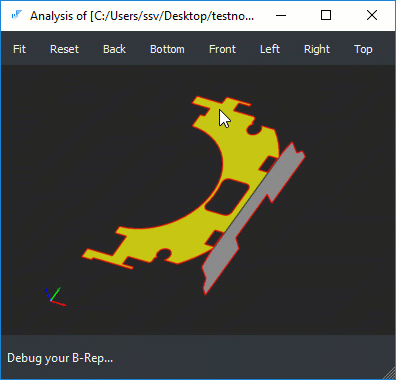

Check normal vectors
To draw a normal field for the selected face, use the corresponding "Show face normals" context menu action.
This function samples the parametric domain of the selected face and renders the normal field using
the following conventions:
-
A norm vector points in the direction of a cross product of the partial surface derivatives.
That is, the arrows of the vector field represent the geometric orientation of a host surface.
-
The red color of the field denotes the FORWARD orientation of the face. The blue color denotes the REVERSED
orientation of the face. I.e., it is a valid situation to have a blue vector field pointing inside a solid.

The color of the vector field (red or blue) is therefore used to represent the topological orientation
of the face. The topological orientation is essentially a Boolean flag which allows to agree or not with the
as-constructed geometric orientation of the host surface. The latter geometric orientation is the intristic
property of the mathematical form which is defined by the underlying surface parameterization. In
geometric modeling, the topological orientations are used to properly orient material without touching
the geometric information.